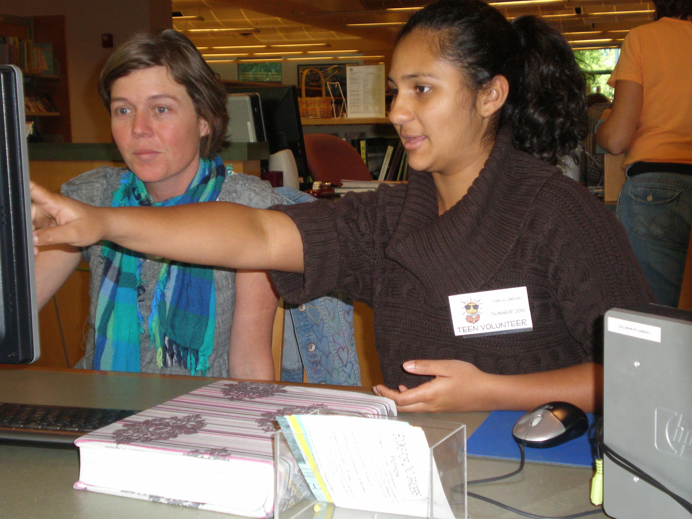

About Me
You can read about who I am and learn a little about my personal life.
Why did I build this website?
I hand-coded this website to share my portfolio with the world and to express
myself in my own corner on this massive network of inter-connected computers
that is the Internet. I also wanted to highlight my projects, different ways
to contact me, and other professional spaces online where I am active.
While I could've used drag-and-drop website builders to rig up my own site in
a quicker manner, I decided to drive down the manual route instead. I wanted
to obtain a deeper understanding of how a website works exactly as well as
how to write one. It began as a fun, passionate project. It has since evolved
into another usable asset for job applications—one that I hope will help me
extend my professional reach further.
Hello! My name is Michael Cortez. I am a college undergraduate with an Associate's Degree in Computer Programming. I am always willing to learn something new and am a great team player. I work hard and always strive to be the best at what I do.
My hobbies and interests entail everything from technology all the way to
tantalizing and mind-stimulating games.
I write programs in various
coding languages such as Python, Java, and some C++. I also practice writing in
web languages like HTML, CSS, JavaScript, and web back-end languages such as PHP
and SQL.

Another hobby of mine is resolving technical issues at varying degrees, which has helped me build clientele as well as volunteer experience. I offer my services not only to help others, but for fun as well. I personally believe there is no better, gratifying feeling than knowing that someone's day is brighter because of my troubleshooting assistance with their technical hurdles.
I engage in different types of games like strategy, board games, and even videogames. Videogames in particular help increase my attention span and build memory as I familarize myself with similar tasks to tackle. I love playing other games such as Battleship if I'm feeling vengeful, Monopoly, and Scrabble, which is the most popular in my household. I find Scrabble to be the most stimulating and fun-filled board/strategy game. It lets me flaunt my lexical skills and allows me to sometimes learn new words and improve my sentences, honing my communication skills.